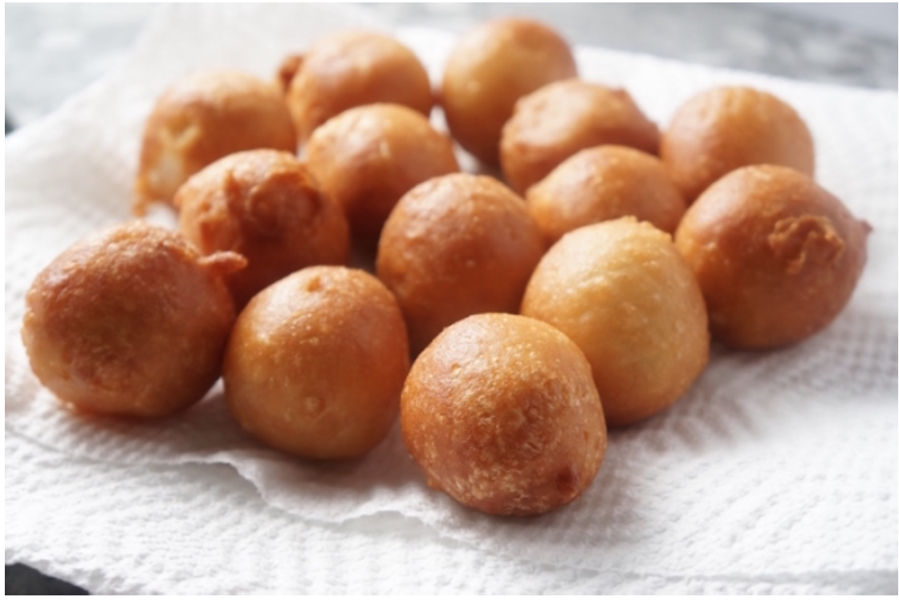

Kpof Kpof

Description
Kpof Kpof is deep fried flour. It tastes pretty good. It is Nigerian recipe.
How to Make It!
Ingredients
- Flour
- Vanilla Extract
- Sugar (Brown or White)
- Yeast
Steps
- Put flour in container
- Add sugar and extract
- Add yeast and mix everything
- Cover flour mixture for about 30 minutes until dough rises
- Deep fry in oil. Do it in scall round clumps
- Let cool, and eat!